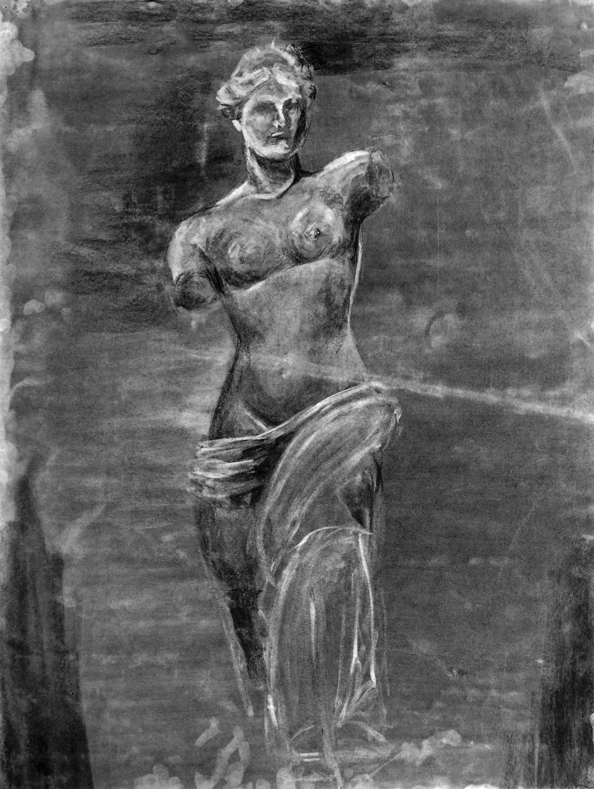
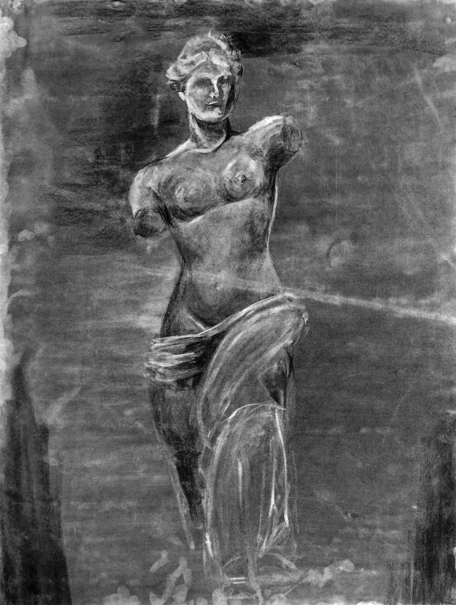

student
“It is a cliché to state that enthusiasm is contagious, but it is true. Diana is the kind of student any professor would want in the classroom, working diligently and carefully with evident enthusiasm and deep engagement.”
-Professor Richard Barlow, Interlochen Center for the Arts
Diana is currently a junior in the BXA Program at Carnegie Mellon University in Pittsburgh, Pennsylvania. She is receiving a Bachelor of Humanities and Arts (BHA) dual degree in Cognitive Neuroscience and Fine Arts.


 
